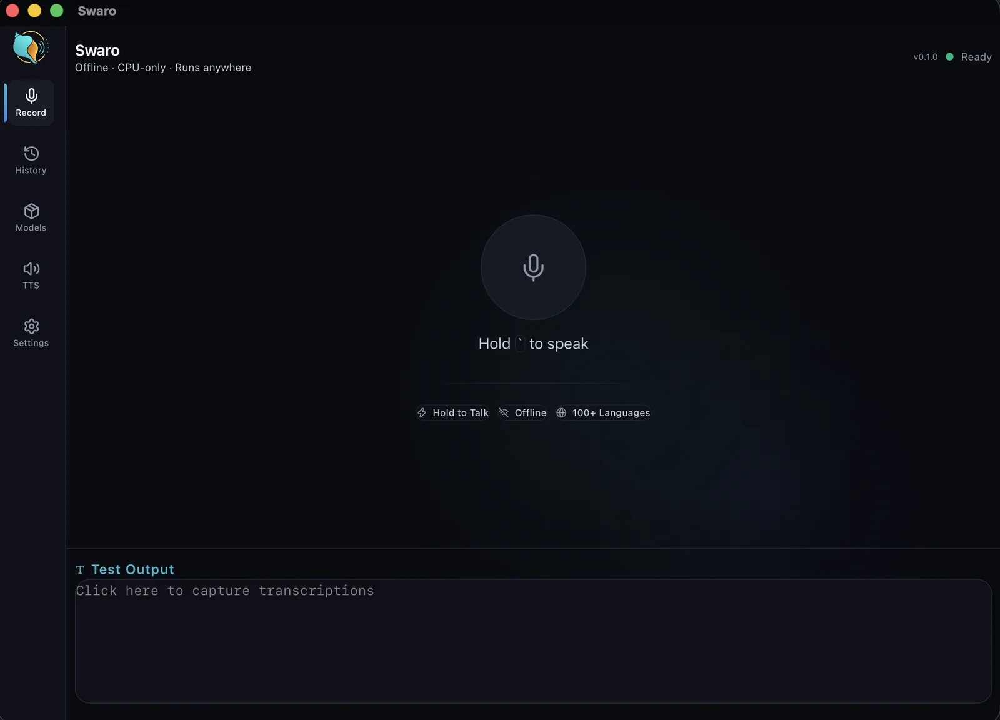
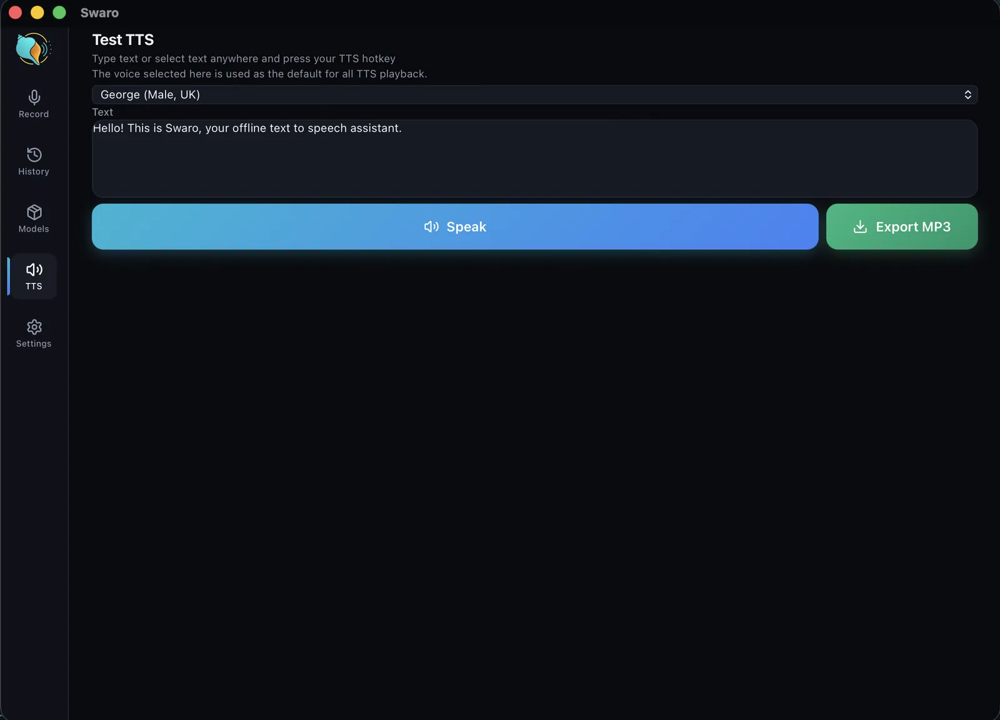
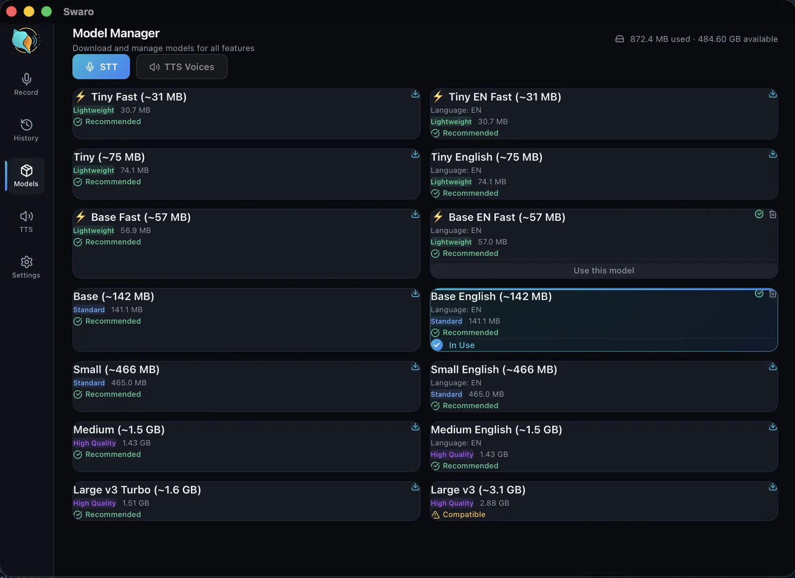
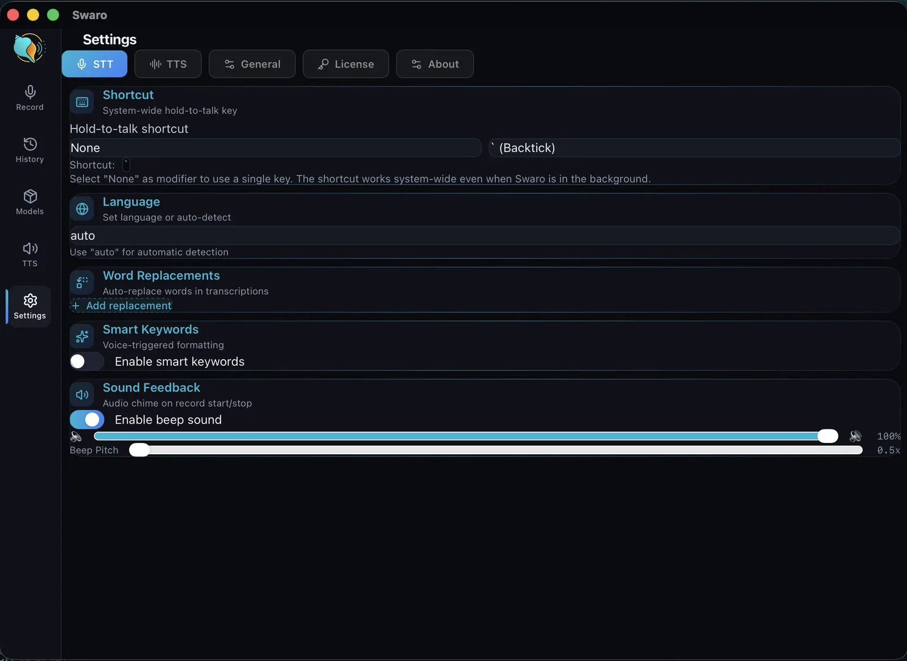
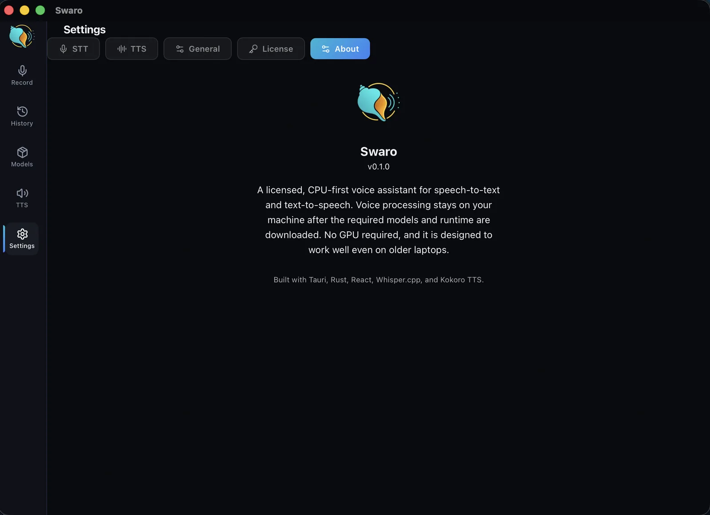
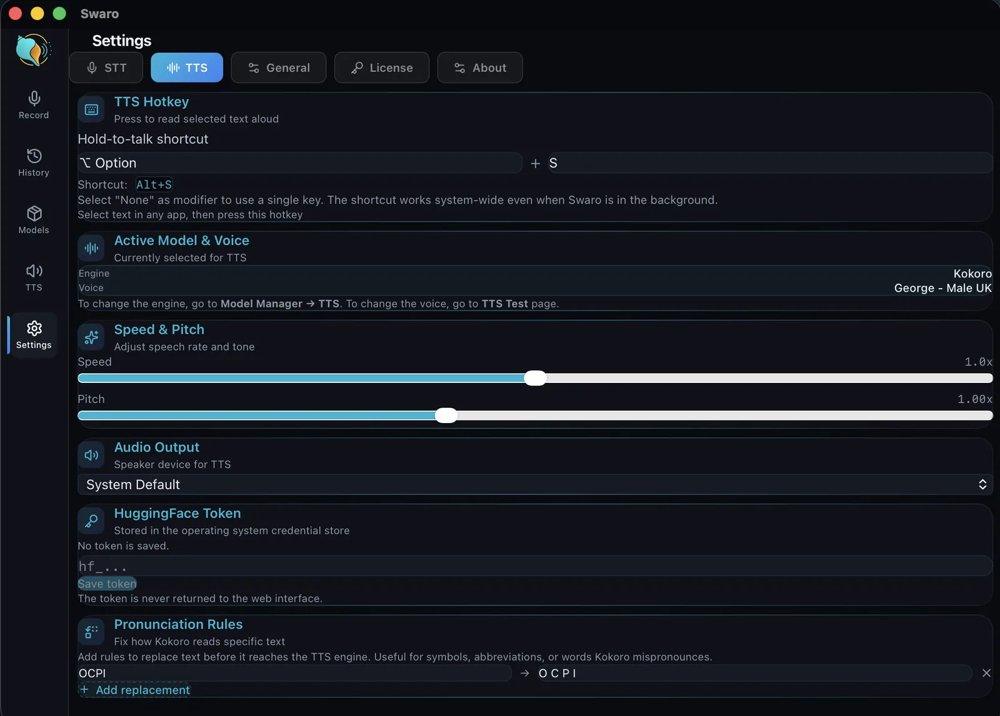

Your voice to text, and text back to voice — offline
Two ways, one app. Hold a shortcut and speak — your words appear right at the cursor, in any app. Or select any text and press a key to hear it read aloud in a natural voice. It all runs on your machine, so nothing is sent to the cloud.
How it works
Both directions, one motion each
No setup ritual, no window to open — just a shortcut, in whatever app you're already using.
Speech → text
- 1
Hold the shortcut & speak
Press your global hotkey from any app and talk. A live waveform shows it's listening — transcribed on your machine, offline.
- 2
Release — it types
Let go and your words are pasted right at the cursor. Your clipboard is saved and restored.
Text → speech
- 3
Select text & press a key
Highlight anything on screen and hit the read-aloud hotkey to hear it in a natural voice — 30+ voices across 9 languages.
- 4
Keep it as audio
Prefer to listen later? Export what you typed or pasted as an MP3 from inside the app.
What it does
Dictation and read-aloud, without the cloud
- Hold-to-talk: hold a global shortcut to record, release to transcribe and paste at the cursor.
- Text to speech: select text anywhere, press a hotkey, and hear it read aloud in natural voices.
- 30+ voices across 9 languages for read-aloud — English, Hindi, Japanese, Chinese, Korean, French, Italian, Portuguese and Spanish.
- Local processing: Whisper transcription and Kokoro speech run on your machine after a one-time model download.
- Clipboard preserved: what you had copied is saved before paste and restored after.
- Word replacements: rules like "colon" → ":" applied automatically to transcriptions.
- Smart keywords: say "rephrase as email" to tag a transcription for later processing.
- Searchable history: recent transcriptions kept on disk, with a 7-day retention window.
- Model manager: download and switch speech models from inside the app; it recommends one for your CPU and RAM.
- Runs in the system tray with a global shortcut, out of your way until you need it.
- Configurable start/stop chimes and a focused, dark interface.
A closer look
Inside Swaro
The real screens you'll use. Click any to enlarge.






Why it's different
Built for the laptop you already have — even an old one
Most good dictation tools assume a constant cloud connection or a new, powerful computer. Swaro doesn't. It runs on a 12-year-old laptop. You choose a speech model to suit your machine: a small, fast one for older or low-power hardware, a larger one for the best accuracy on a newer machine. Every machine gets a model that works; what changes is accuracy and speed.
Private
Speech and text are processed locally. No audio is sent to a cloud transcription service to make the app work.
No GPU needed
Runs on the processor alone, so a modest laptop is enough. On Apple Silicon Macs it also uses the built-in graphics chip to go faster.
Desktop-ready
Available for Windows 10 and 11 and for macOS on Apple Silicon, with native paste on each.
Who it's for
The details
Under the hood
Swaro is used every day by its maker. Start with the complete 14-day trial; no account or payment card is needed. See what changed in each version.
Try Swaro free for 14 days
Every feature, no card needed. If it earns its place, buy it once and keep it.